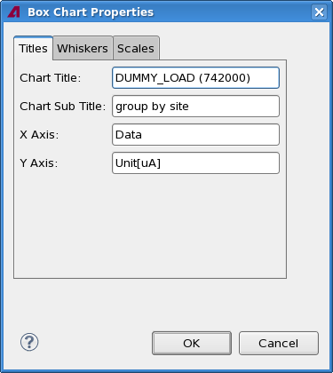
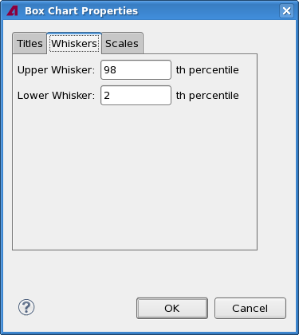
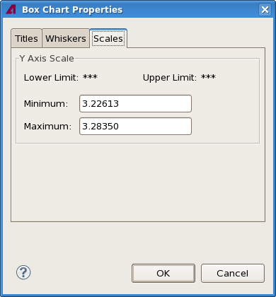

Box chart properties
The Box Chart Properties dialog lets you specify certain aspects of the look of a Box chart view, including the labels and the settings for the axes.
The dialog has three tabs, which are described below.
Titles

The Titles tab contains these elements:
- Chart Title: This field contains the title displayed at the
top of the chart.
By default, this is the test name and the test number in parentheses.
- Chart Subtitle: The subtitle displayed beneath the title of
the chart.
By default, this is the grouping of the displayed tests. If there is no grouping, the field is empty.
- X-Axis: The label for the x-axis (data axis).
By default, this is "Data".
- Y-Axis: The label for the y-axis (value axis).
By default, this is the unit used for the axis.
Whiskers

The Titles tab contains these elements:
- Upper Whisker: Specifies the percentile indicated by the upper whiskers in the chart.
- Lower Whisker: Specifies the percentile indicated by the lower whiskers in the chart.
Scales

The Scales tab contains these elements:
- Y Axis Scale:
The Lower Limit and Upper Limit fields display the limits with which the displayed test has been executed.
- Minimum: The lowest value displayed on the value axis.
- Maximum: The highest value displayed on the value axis.
Functional changes
- Introduced in SmarTest 7.2.0
- SmarTest 7.2.2: Renamed axis